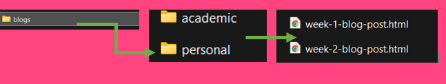
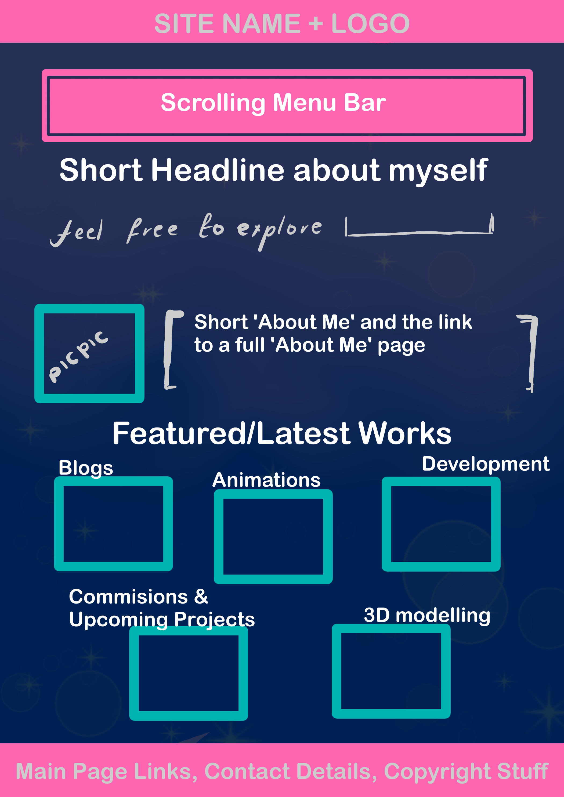

Week Too: Blog Post, Wireframing and Interaction
Reflections on Moulthrop's Reading
Wow, Moulthrop’s ‘You say you want a Revolution? Hypertext and the Laws od Media’ (2003) was a long read. 😫
Moulthrop’s essay directly speaks to the way the internet works today, especially his reference to Ihab Hassan’s patina of thoughts (p694). At first, I got a bit confused. After googling what exactly a “patina” was, I came across a definition that described it as “Patina is the natural coating that is created over the rock surface due to the absorption or loss of various elements. It is commonly thought that the process of patination is slow; thus, genuine patina may be used as indication for the antiquity of an item.” Key words I took away from this definition is the fact that the process is natural and slow.
Moulthrop via Hassan, makes use of this word in a digital context; it made me wonder if the phrase was used metaphorically to say that a layer of digital noise will develop over our minds and thoughts, naturally as time goes one—which is inevitable. However, it also feels contradictory if you look at our internet today, and how algorithms work to push content that keeps us engaged and distracted; new internet systems were engineered to manipulate attention and condition our behaviour. Our minds are so rock hard, we as people are blind and easily swayed so it’s only natural for the patina of digital noise to cover our mind and thoughts as a result. If our minds are the rock, then perhaps the patina isn’t a natural evolution. It is a corrosive layer forming due to the manipulation and conditioning.
The full statement Moulthrop made, directly relates to the internet today: “electronic information may be rapidly duplicated, transmitted, and assembled into new knowledge structures. From word processing to interactive multimedia, postmodern communication systems accentuate what Ihab Hassan calls “immanence” or “the intertextuality of all life. A patina of thought, of signifiers, of ‘connections,’ now lies on everything the mind touches in its gnostic (noö)sphere....” (172),” (Moulthrop 2003, p694) The internet was initially designed to help us connect and inform us, but now its doing the opposite.
The internet now, makes it easy for content and information to be duplicated. Everything we consume has become one big mess of information; it’s become very difficult to discern what information is real and what is not. And sadly, it seems like many of us do not verify our sources anymore, we just believe whatever we see. Everything we see online is remixed, linked and remade into new contents. I remember watching a video by ‘Not Even Emily’, who is a youtuber I follow. In her video, she explained that in a world where everything has been spoken about, it’s very difficult to make fresh content that someone else hasn’t covered already. Now bring short-form content (like Tiktok videos), memes, Ai-generated videos and deepfake into the mix, and not only is it easy to remix content; it also becomes easier to edit and release content where the initial meaning of the information has been changed, drastically. This is our “intertextuality of life”, nothing exists on its own anymore.
Our minds, thoughts, opinions and emotions are all connected in this digital noosphere, that gives every person with access to the internet a voice and the power to speak out. A noosphere, according to a Wikipedia, is the highest level of mental activity; also called the sphere of reason. Idealistically, it sounds very empowering to know that our thoughts and feelings can spread instantly through this digital space, but it makes us more vulnerable. Many people do not think for themselves anymore, and tend to just follow the trends, leaning towards whatever side digital propaganda feeds to them. Yes, the internet gives us a voice to speak out and start movements, but in reality, very little happens. Instead, these days I see people using the internet to spread propaganda, paint certain communities in a bad light and to DISTRACT us from the actual events taking place in the world.
Additional Suggestion
So far, building my website has been intriguing. I have no idea how many times I have redone my folder structures, so that my pages are organised in a neat and clean way. This is to ensure that my URL scheme is not confusing to me or potential viewers.
When doing my folder layout, I was already thinking of all the different types of content I would like to display on my website. My website will have a lot of different sections, thus it needed proper folder organisation. With the help of our lecturer and tutor, I also realised the importance of keeping the names of files and folders short and concise.
Here is an example of how I’ve structured my blog folder:
I want my website to have a cute but simple design. I took inspiration from Samsungs website for the navigation and futuristic theme, Mira Byler’s site for the colour scheme and layout, then Luan Dell’s website, looking at how she used the space.
This is my first sketch for my homepage. I just want to display all the different things I dabble in, in a minimalistic kind of, futuristic theme (because the volume of content is already so overwhelming). Colour scheme? Well.. pink is my favourite colour, so I needed other colours that would compliment the colour. But then I realised, “My name is Star… why don’t I try to make my website match that theme? Like a space theme”.
The colours are terrible… but please understand, that I’m still trying to explore …them. Any suggestions or improvements are welcome
What does interaction mean to me?
For me, interaction should focus on how the user feels when they land on my site. I want them to engage with my sight emotionally and visually. At the end of the day, my main goal is to create a sight that’s easy on the eyes, smooth to navigate and engaging enough that it encourages the users to explore more of the sight.
Right now, my initial design looks a bit overcrowded, and I don’t think it gives the user space to ‘breathe’ in a sense. The colours are a bit overwhelming, but I just made this so I don’t know if it needs a fresh pair of eyes? But dang, I really need to have my favourite colour (PINK) in there. I tried to make use of the space like Luann Dell’s site, but dang mine looks like a strange attempt
I want to note that, this is just THE INITIAL DESIGN, and it’s for web viewing on a PC or laptop. I just want my users to enjoy each interaction they have with the site, and the content displayed on the site.
-FIN-